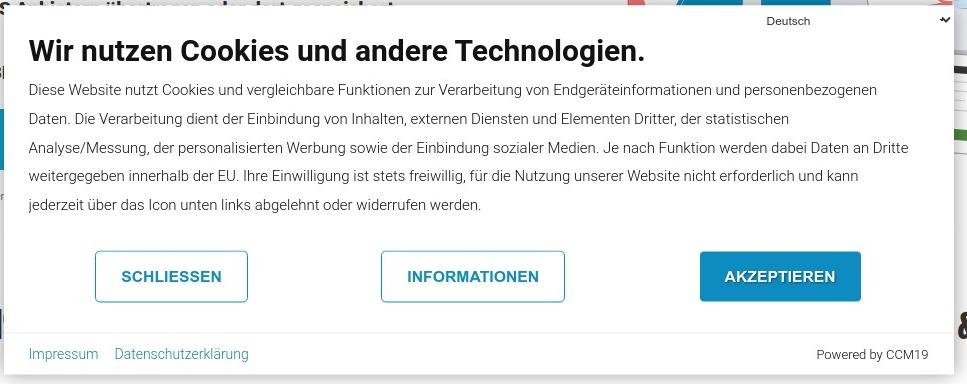
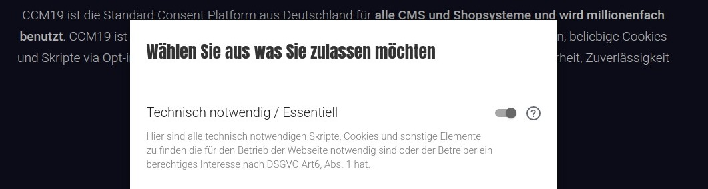
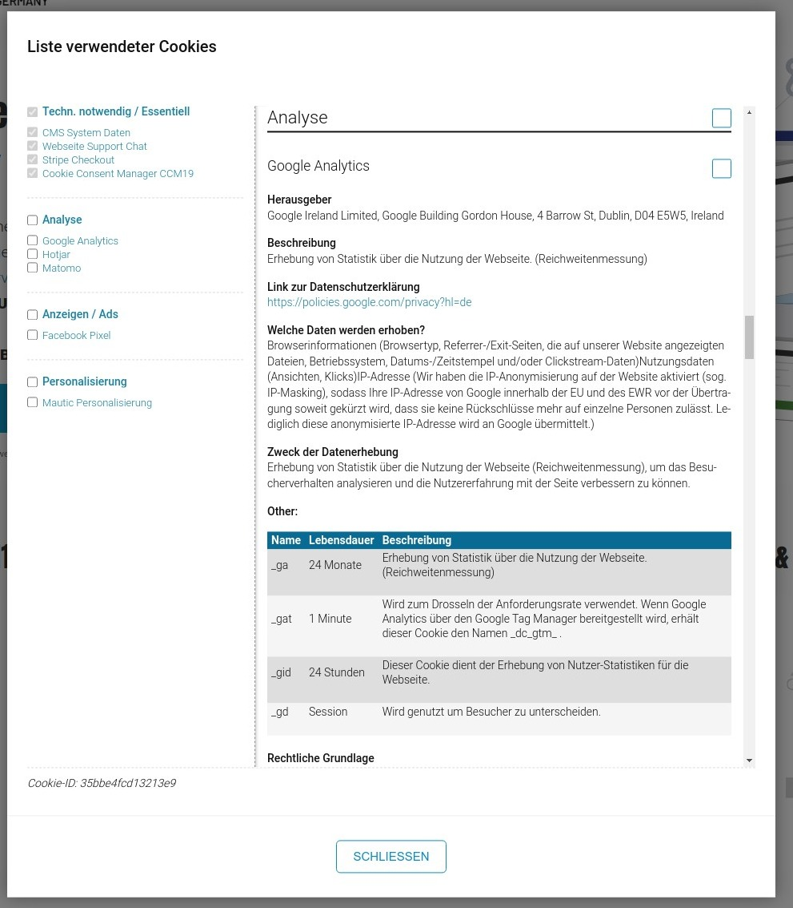

Das Frontend von CCM19 besteht aus den Widgets die Sie sehen und bedienen können und den Funktionen im Quellcode die das Skript umsetzt, um die notwendigen Funktionen zu realisieren. Im Folgenden werden wir alle Punkte durchgehen und alle Fenster zeigen die das CCM19 erstellt.
Das Widget und alle anderen Daten werden minifiziert, komprimiert und serverseitig gechached um einen bestmögliche Performance zu erreichen.
Durchschnittliche Ladezeiten unseres Skriptes betragen zwischen 0,03 und 0,2 Sekunden pro Aufruf.
Wenn Sie eine Download Version verwenden wird die Aufrufzeit durch Ihren Server wesentlich mitbestimmt. In der Regel ist aber auch bei fast allen Server gewährleistet dass ein schneller Aufruf möglich ist.
Dies ist das erste Widget was die Besucher Ihrer Webseite zu sehen bekommen. Daher ist es wichtig dass Sie es optimal an das Look & Feel Ihrer Webseite anpassen. Wie Sie das machen lesen Sie hier: Themes - grundsätzlich lassen sich alle Widgets komplett individualisieren und positionieren:
Mittig
Links
Rechts
Oben
Unten

Der Klick auf "Akzeptieren" akzeptiert alle eingestellten Skripte und Cookies und schließt das Fenster sofort. Der Consent wird dabei im Browser der Besucher gespeichert. Der Klick auf "Schließen" entspricht einer Ablehnung und über Informationen kommt man zu den weiteren Daten in einem weiteren Widget.
Der Consent bleibt solange erhalten wie der Besucher die Cookie oder Local Storage Daten in seinem Browser nicht löscht. Die maximale Laufzeit stellen Sie hier Consentspeicherung ein. Bei einem weiteren Aufruf der Seite wird die Maske nicht mehr gezeigt.
Sie können die Laufzeit auch manuell beenden über die Administration indem Sie die Cookie Laufzeit absenken oder einen Reset erzwingen.
Klickt der Besucher auf den Button Einstellungen erreicht er die nächste Maske wo er die Kategorien der Einbindungen, Skripte und Cookies anschauen, durchlesen und bestätigen kann.
Die Kategorie "Technisch notwendig" oder auch "Technisch notwendig / Essentiell" ist immer angehakt und kann nicht abgehakt werden.
Hier werden nur die Einbindungen und Cookies beschrieben die für das Funktionieren der Webseite unabdingbar sind. Seit dem das neue TTDSG gilt können Cookies oder Skripte hier nicht mehr nach §6 DSGVO - begründetes Interesse des Betreibers - eingetragen werden.
Auf die rechtlichen Implikationen wollen wir an dieser Stelle lieber nicht eingehen. Hier fragen Sie den am besten den Anwalt Ihres Vertrauens.
Die Besucher können nur diese Haken setzen oder nicht. Klicken die Besucher auf Speichern wird der Zustand wie er angezeigt wird, gespeichert. Klickt man hier auf "Alle Akzeptieren" werden alle Kategorien mit allen sich darin befindenden Einbindungen akzeptiert.
Abbrechen bringt einen zurück zur vorherigen Maske.
Die einzelnen Kategorien können auch Zusatztexte bekommen, diese können Sie in der Administration pflegen, Beispiel siehe im folgenden Screenshot.

Wenn Besucher mehr Informationen über die einzelnen Einbindungen lesen möchte dann können sie auf das Fragezeichen klicken und kommen dann in die folgende Maske.

Hier können die Besucher nun alle Elemente die auf der Webseite verwendet im Detail nachlesen, was machen die Skripte, was wird wohin gespeichert, wer hat Zugriff darauf usw. Diese Einstellungen können Sie hier anpassen: Embeddings & Cookies .#
In der linken Spalte sehen Sie die Einbindungen sortiert nach Kategorien, jeder Eintrag kann angeklickt werden und die Besucher springen dann direkt zu dem passenden Eintrag um weitere Informationen zu bekommen. Die Besucher können jeder einzelnen Einbindung oder auch kategorieweise der Nutzung zustimmen.
CCM19 bietet den Besuchern eine einfache Möglichkeit den Consent jederzeit zu widerrufen oder anzupassen. Als Betreiben können Sie das unten stehende Icon einfach einblenden lassen, ein Klick auf dieses Icon öffnet wieder die Consent Maske - so dass Ihre Besucher dort wieder Ihre Einstellungen anpassen können.

Sie möchten Ihren Besuchern die Möglichkeit geben, sich nachträglich noch umzuentscheiden und z.B. doch keine Analyse-Cookies zuzulassen? Fügen Sie einfach folgendes HTML Snippet ein:
<a href="#" onclick="CCM.openWidget();return false;">Konfigurationsbox öffnen</a>Somit wird beim Klick auf diesen Link das Konfigurations Pop-Up erneut für den Besucher geöffnet.
Alternativ, falls Sie keine Javascript-Links einfügen können, können Sie das folgende Ziel in einem Link verwenden: #CCM.openWidget.
<a href="#CCM.openWidget">Konfigurationsbox öffnen</a>Weitere Möglichkeiten finden Sie hier - Javascript / programmatische Steuerung
Das Impressum können Sie entweder per Link oder direkt einbinden - wie das funktioniert lesen Sie hier nach: Impressum bearbeiten . Die Maske im Frontend sieht dann so aus:

Die Datenschutzerklärung erreichen Sie wenn Sie auf den Link "Datenschutzerkläriung" klicken, bearbeiten können Sie die Daten hier: Datenschutz bearbeiten